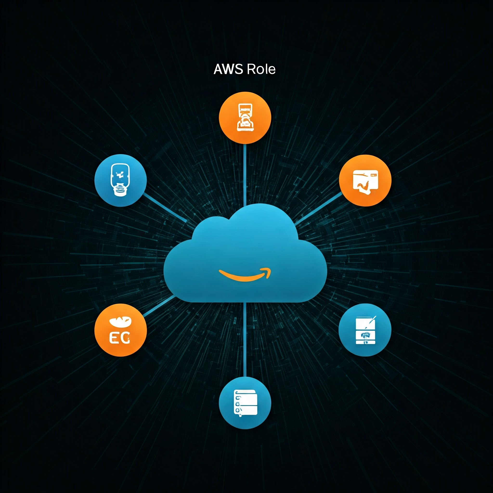

Amazon Web Services (AWS) has emerged as one of the leading cloud computing platforms, providing a comprehensive suite of services that empower businesses to build, deploy, and scale applications efficiently. AWS offers a wide range of infrastructure services, including compute power, storage, databases, networking, and machine learning, allowing developers and enterprises to focus on their core applications without worrying about maintaining physical infrastructure. The cloud services provided by AWS are highly scalable, flexible, and cost-effective, making them ideal for startups, large enterprises, and everything in between. AWS's widespread adoption across industries is a testament to its reliability and the significant role it plays in transforming the IT landscape.
One of the key advantages of AWS is its scalability. AWS services can automatically scale up or down based on demand, ensuring that businesses only pay for the resources they use. This dynamic scalability is particularly important for handling fluctuating traffic or growing applications. For example, AWS’s Elastic Compute Cloud (EC2) allows users to launch virtual servers with different configurations, adapting to changing workloads. Similarly, the Simple Storage Service (S3) provides scalable cloud storage that can store an unlimited amount of data, making it easy for businesses to manage large datasets without worrying about running out of space. AWS ensures that users can scale their infrastructure seamlessly, eliminating the need for over-provisioning or costly hardware investments.
AWS also offers a wide range of services that cater to specific use cases and industries. For instance, AWS Lambda enables serverless computing, allowing developers to run code in response to events without provisioning or managing servers. This results in reduced operational overhead and increased efficiency. AWS also offers specialized tools for machine learning, artificial intelligence, and big data analytics. Services like Amazon SageMaker and AWS Glue simplify the deployment of machine learning models and the processing of large datasets, making advanced technologies more accessible to developers without the need for deep expertise. Additionally, AWS’s vast network of data centers across the globe ensures that applications can be deployed with high availability and low latency, regardless of geographic location.
The role of AWS in modern application development is not just about providing cloud infrastructure; it is also about enabling innovation and driving digital transformation. AWS empowers developers to focus on building powerful applications without being bogged down by the complexities of managing servers and infrastructure. It also offers a range of security features, such as data encryption, identity and access management (IAM), and compliance certifications, ensuring that businesses can protect their sensitive data. By adopting AWS, organizations can leverage cutting-edge technologies, streamline their operations, and reduce costs associated with maintaining traditional on-premise infrastructure. The flexibility and depth of AWS’s services make it an indispensable tool for developers and businesses looking to stay competitive in an increasingly digital world. With the growing shift towards cloud computing, AWS’s role in shaping the future of technology is expected to expand, solidifying its position as a key player in the global tech ecosystem.